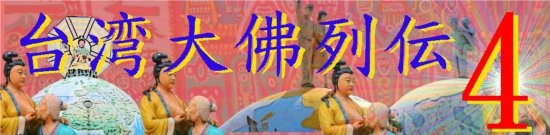
湖山寺/雲林縣
台湾大佛列伝4、やっと大仏サマの出番である。
雲林縣斗六市の郊外にそれはそれは素敵な大仏ワンダーランドがある、というハナシですよー。
寺の名前は湖山寺。
お寺に着くと最初に出迎えてくれるのは10ｍほどの四天王。
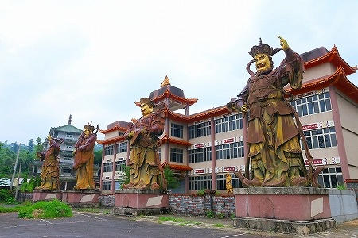
四天王の先には山門があり、その先に早速ボスキャラの弥勒サマが山の上で待ち受けていらっしゃる。ひゃー。
地形が複雑で仏像のサイズが大きい上に位置や向きがまちまちなので、遠近感が狂いまくりなのである。
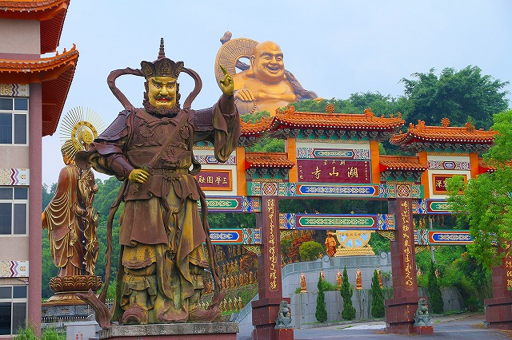
弥勒像は36ｍ。坐像としては台湾最大だろう。
ではいざ入門！
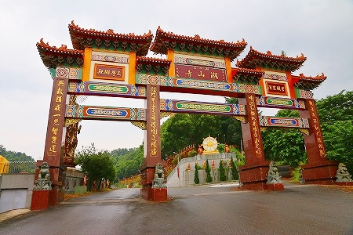
山門を潜るとそこにはコンクリートの擁壁がある。
天辺には「斗六 湖山寺 佛教藝術園區」の文字が燦然と輝いている。
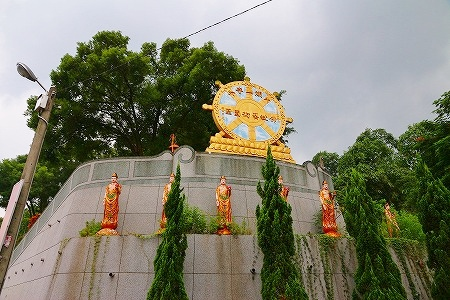
その先には数え切れないほどの金ピカ仏が延々と！
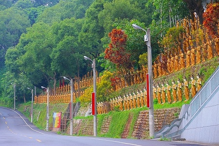
チョットうっとりする位のレベルで並んでいるのだ。
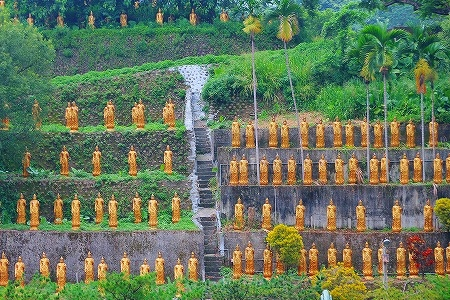
ちなみにこの道路は公道です。んなことお構いなしですね。
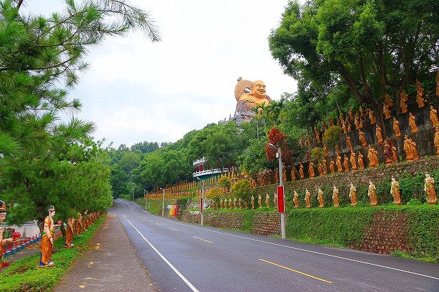
このお寺、見どころは多いので、どこから見ていいものやら迷ってしまうが、とりあえず本堂にお参りして仁義を通しておこう。
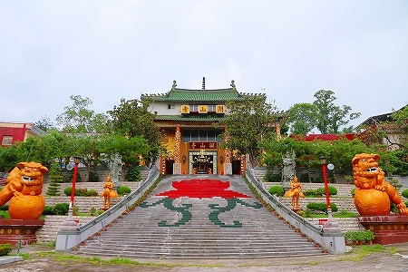
本尊サマにご挨拶。
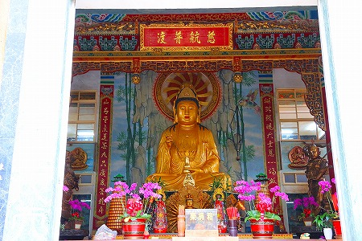
今の今まですっかり忘れていたが、この御本尊自体も2丈6尺あるわけだから、サイズ的には立派な大仏だよね。
…と、ここで本堂前からふりかえって…
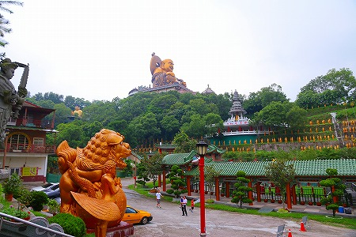
境内を眺めてみるとこんな感じ。
…大仏だらけじゃないですか！
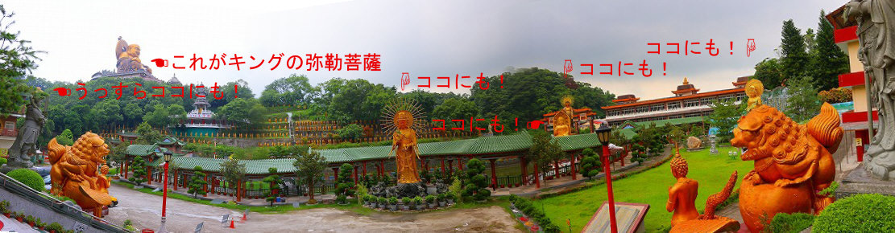
もう、うっとりするほどの大仏サファリパーク状態。
左から順に紹介すると…
一番左にいる「うっすらココにも！」な大仏は結局どうやって行ったらいいのかすら判らなかった。
でも結構でかいぞ。
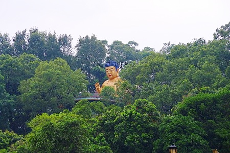
道の向こうの山の上に鎮座する巨大弥勒菩薩はもちろんこの寺のボスキャラである。
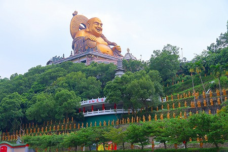
よく台湾の夜市や仏具屋などで見かける市販タイプの弥勒像を巨大化させたようなフォルム。
巨大化にあたってデッサンが狂っちゃったり縮尺がヘンになっちゃったり、といった造形的破綻は一切見られない。実に完成度の高い巨像である。
もちろんそれは一般的には善き事なのだが、こっちとしてはちょっとくらい破綻していただいても一向に構わないのだが…。まあ、いいです。
それにしてもあんな山の上に一体どうやって作ったんだろ。
その他にも境内には大仏さんがウヨウヨと…
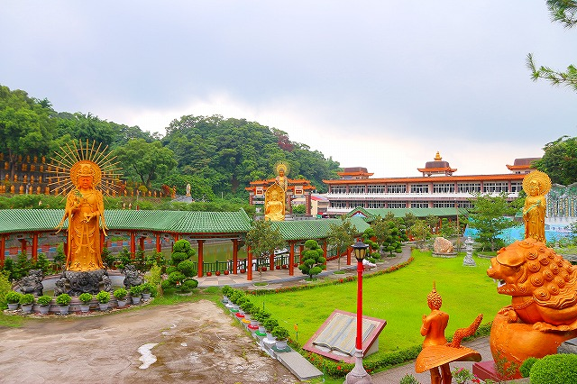
本堂と正対するように立っている観音サマ。
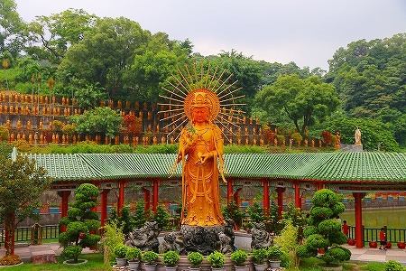
顔だけが妙にリアルで材質も違うみたい。
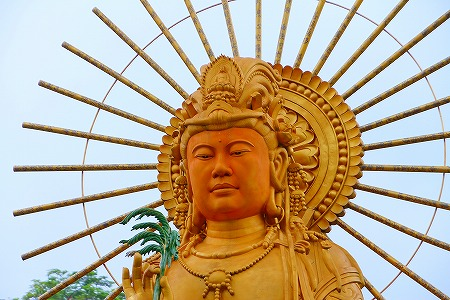
植物を手にして立っている。
その向こうにはボスが満面の笑みで座っておられる。
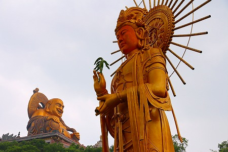
その裏には池があり、池の中にも大仏さんがおわす。
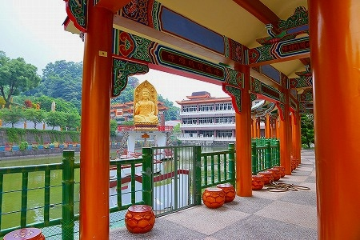
立ちと座りのダブル阿弥陀サマ。
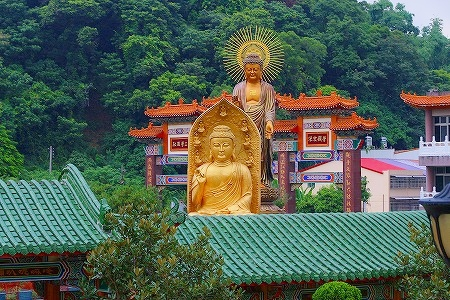
後ろの立像は先ほど山門から後姿を見せていた阿弥陀サマである。
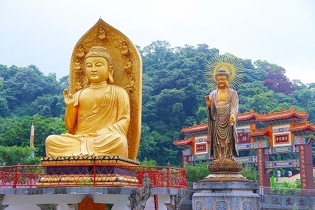
その背中には蓮の花と葉があしらわれており、チョット凄い事になっちゃっている。
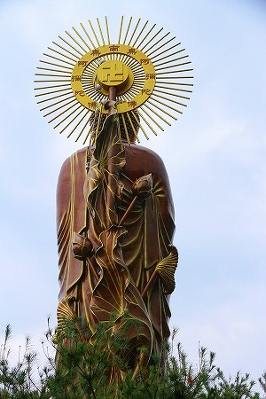
先ほど四天王がいた後ろの建物の屋上にはＯＫ印のオブジェが。
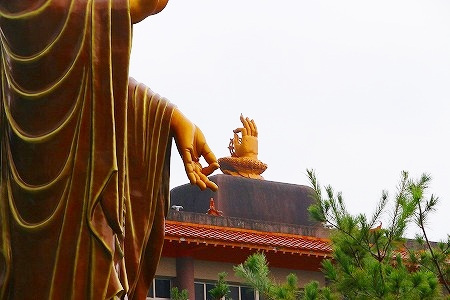
さらに一番右に見えた観音サマ。こちらも中々立派なサイズ。
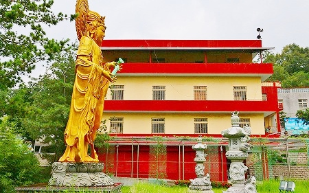
本堂前には石で作られた巨大な本が置かれていた。
金文字でお寺の紹介がなされている。
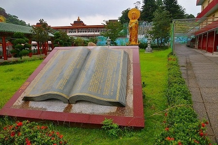
それによると３００年以上の歴史のある寺だとか。
そんなこんなで、いよいよボスキャラである巨大弥勒像に向かうよ。
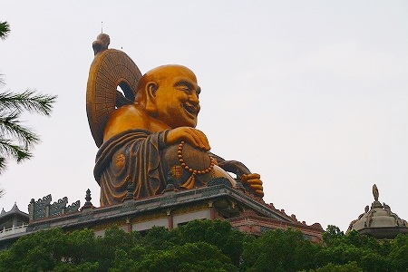
道を渡り、金ピカ観音がズラリと並ぶ斜面を登っていく。
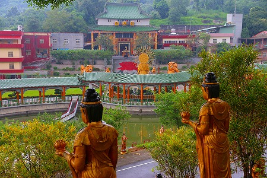
見下ろせば湖山寺の本堂のあるエリアが見渡せる。
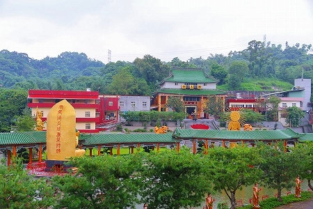
段々本堂や大仏さん達が小さくなってくる。
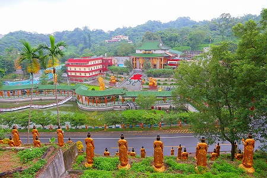
あ、もう一体大仏さん発見！文殊サマかな。
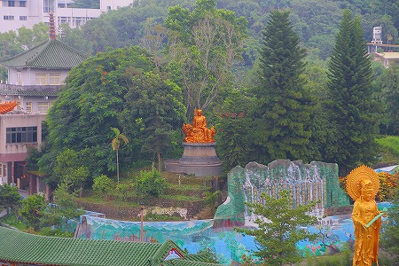
眼下の大仏軍団を見つめる観音軍団。
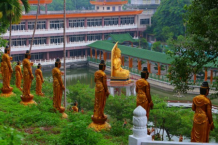
山道はまだまだ続きます。
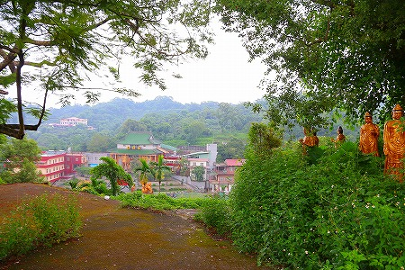
段々緑も深くなってまいりました。
巨大弥勒像の直下、金ピカ観音軍団の列も途切れ、いよいよボス弥勒様とのご対面！
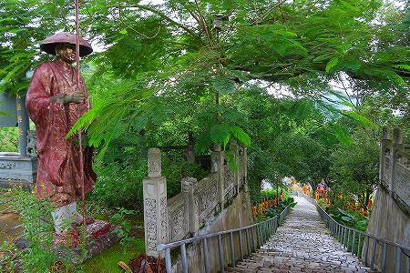
と、
何ぃいいいい！
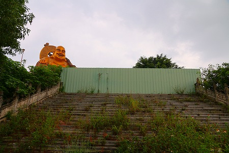
巨大弥勒像への道が閉ざされてるじゃないの！
こちらの動揺もおかまいなしに屈託のない笑みを蓄え続ける弥勒サマ。ちょっとお！
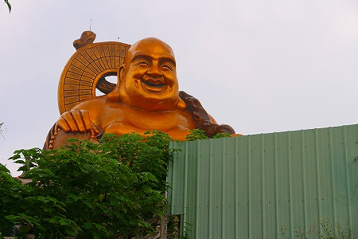
うむー。これは暫定的な処置というよりかなり本格的に閉鎖しちゃってるっぽい雰囲気だなー。
事前のリサーチによると弥勒サマの直下で撮影されていた画像などがネット上にあったので、そこまでは当然いけるものだと踏んでいたのにぃー。
とりあえず脇に回り込んでみる。
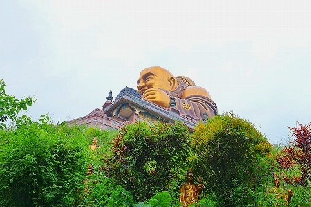
遠目に台座を見てみると窓枠も入っていないし、内装も未完成のようだ。
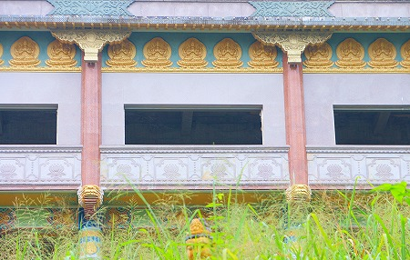
これってもしかして完成を待たずに廃墟になっちゃったというパターンかぁ？
はあ〜あ。
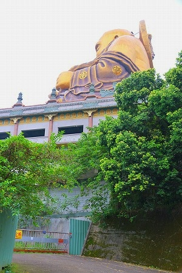
弥勒サマの脇には工事車両が出入りしてるっぽいゲートがあったがそちらも堅く閉ざされていた。
これで合法的に弥勒サマに接近するルートは閉ざされちゃったな。
私の無駄なチャレンジを終えるのを待ち構えていたかのように雨が降り始めてきた。撤収するか。
再び山道をトボトボと下る。
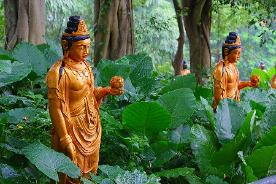
クワズイモの葉に埋もれかけた観音サマ。チョット寂しげ。
ボスキャラの直下にたどり着けなかったのは大変残念だった。
ただし胎内めぐりができない大仏なので、直下まで行けても中に入れなかったわけだし、まあ、ダメージは少なかったのかな、と自分を無理矢理慰めておこう。
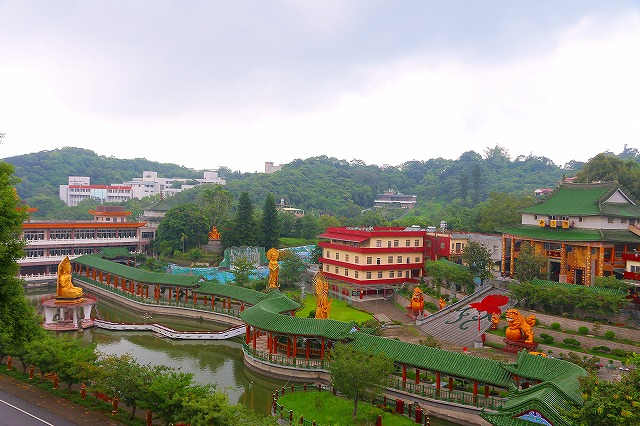
それに
このお寺の大仏密集っぷりは何ら損なわれる事は無いしね！
珍寺大道場 HOME